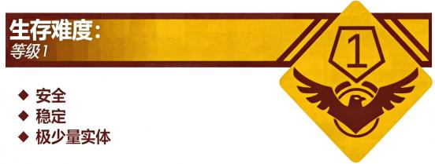

Level 0.2 - "停车场"

描述：

由首名发现 Level 0.2 的流浪者 daigua 拍摄的图片，此图展现了 Level 0.2 一个停满汽车的区域。
Level 0.2 是 Level 0 的一个子层级，这个层级最早被流浪者 daigua 发现，其主要功能为供“老师”及“校长”等“教务人员”停放交通工具。在没有停放交通工具时，Level 0.2 呈现为 一块开阔的空地，地面上有一些疑似斑马线和车道标志的白色及黄色的线条。
此层级的天花板上装有白色 LED 灯照亮，但部分区域可能存在没有安装灯或者灯光不稳定、甚至坏掉的情况。不建议流浪者走入这些区域，我们不确定这些区域里是否藏有未知的危险实体。
实体：
少有实体出没。仅在“上学时间”或“放学时间”有“老师”或“校长”来此驾驶交通工具离开。偶尔会有“保安”巡逻。
基地、前哨和社区：
由于本层级交通工具多，容易发生危险，而且少有实体，偶有“保安”巡逻，故此层级暂无基地、前哨或社区。如需帮助可以前往 Level 0.1 寻求帮助。
入口和出口：
入口：在环绕在 Level 0 附近的街道半圈可以看到一个类似闸门的装置，流浪者可以通过闸门附近的有间隔的石桩进入。
出口：原路返回，可以抵达 Level 0。据一些流浪者汇报，可以通过进入层级内的黑暗区域并行走大约 5 分钟后进入 Level 0.1，但这一点未经证实，请各位流浪者尽量不要尝试。